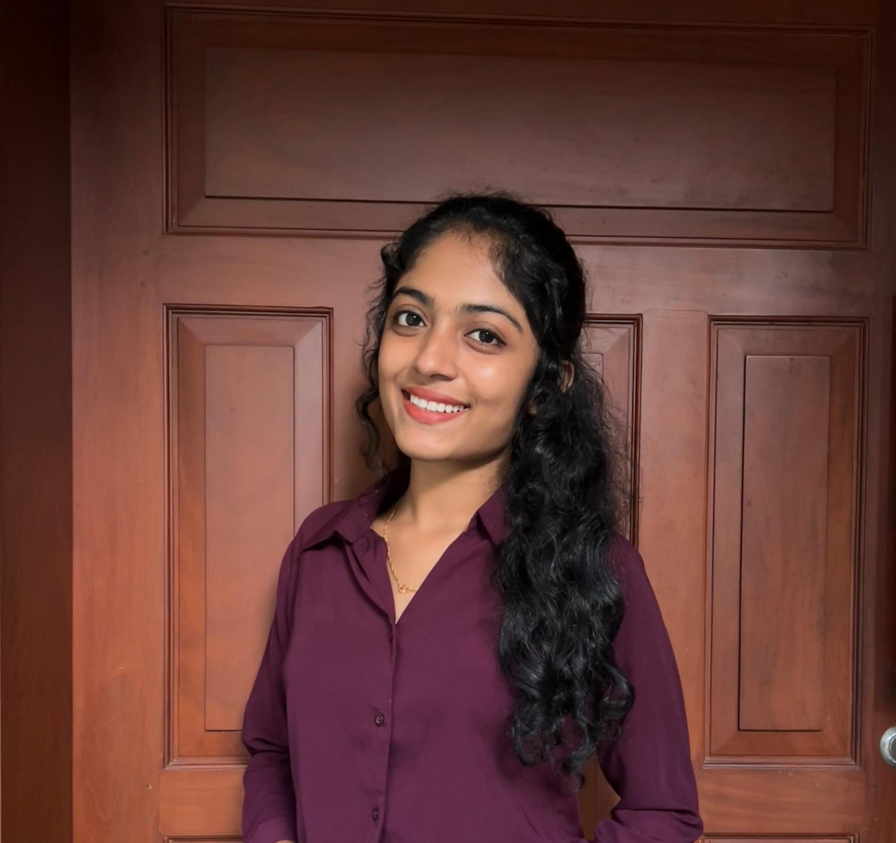

Education
Bachelor of Engineering in Computer Science
Canara Engineering College
Year: 2022 - Present (3rd Year)
- Programming Languages: Java, SQL, C
- Web Technologies: HTML, CSS
- Tools & Technologies: Visual Studio Code
Projects
Structural Deformation Detection using CNN Model
A project focused on detecting structural deformations using Convolutional Neural Networks (CNN). The model analyzes images to identify changes in structure over time.
Technologies Used: Python, TensorFlow, Keras, OpenCV
Certifications
- Participatant in Dark Pattern Hackathon
- Virtual Cloud Computing - GreatLearning
Languages
- English: Fluent
- Kannada: Fluent
- Hindi: Basic